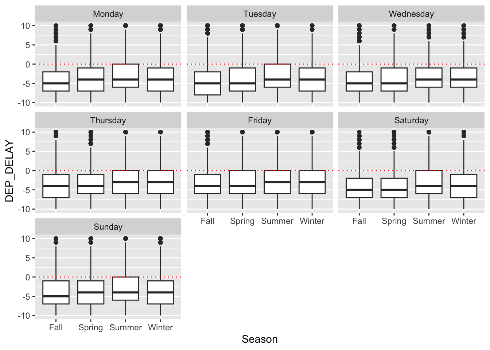

planes %>%filter(OP_CARRIER =="WN") %>%ggplot(aes(x = Season, y = DEP_DELAY)) +geom_boxplot() +labs(title ="Boxplots of Departure Delay for carrier WN" )+scale_y_continuous(limits =c(-10, 10) )

Show the code
planes %>%group_by(Season) %>%count(CANCELLED)
# A tibble: 8 × 3
# Groups: Season [4]
Season CANCELLED n
<fct> <int> <int>
1 Fall 0 23215
2 Fall 1 358
3 Spring 0 24658
4 Spring 1 1104
5 Summer 0 25180
6 Summer 1 1195
7 Winter 0 23285
8 Winter 1 1339
It is interesting that the number of flights are similar across seasons. This may be explain by the fact that this dataset only consists of domestic outgoing flights from LGA. Tourism from different continents is not represented in not dataset.
Is delay influenced by departure time? Let’s plot planned departure time (CRS_DEP_TIME) vs. Delay time (DEP_DELAY) by seasons:
This plot is quit interesting and reveals a certain pattern that needs to be considered in our analysis. Firstly, Wikipedia states LGA has a curfew between the hours of 12am and 6am during the warm months of the year. Looking at x axis this curfew is visible. From this plot it is unclear whether planned departure time has an influence on delay. Though it seems as if that there are more delays during the summer.
Let’s look at weekday. Outlines dominate the visuals but we can’t use log_10 scale on y axis because we have a lot of on time planes (y = 0) or leaving early planes (y = negative). 0 is -inf and negative numbers are undefined with log10. So we decrease the limits show in the plot
It is interesting that 75% of planes leave early. It’s would be interesting to explore WHEELS_OFF variable which is the time point the plane leaves the ground.